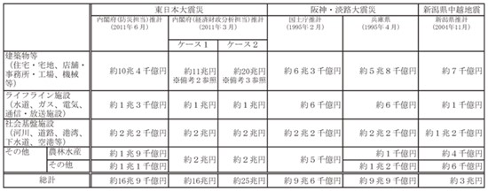
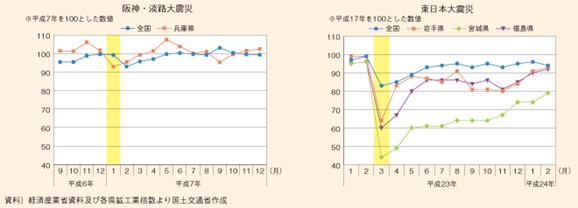

経済
地震による経済への影響
地震による被害額
地震による経済的被害は甚大なものであった。社会インフラ等経済ストック(社会資本・住宅・民間企業設備)の被害額について、東日本大震災による推計被害額は約16.9兆円に上り、阪神・淡路大震災においても約9.6兆円に達している。ストック被害の内訳をみると、特に建築物等や社会基盤施設の被害額大きかったことがうかがえる。
表1「資本ストック被害額推計」

◎備考
1.ケース１の建築物の損壊率の想定については津波被災地域を阪神・淡路大震災の２倍程度とし、非津波被災地域を阪神・淡路大震災と同程度とした。
2.ケース２の建築物の損壊率の想定については津波被災地域をケース１より大きいものとし、非津波被災地域を阪神・淡路大震災と同程度とした。
◎地震による経済的影響
地震による経済的影響の特徴として、被害が大規模であるだけでなく、様々な経路を通じて被災地以外の広範囲の地域に経済的影響を及ぼす。
東日本大震災
原子力発電所が被害を受け、東日本の広範囲にわたり、電力供給が低下した。
この震災ではマグニチュード9.0という巨大な地震による被害に加えて、地震によって引き起こされた大規模な津波により被害が広範囲にまで及んだ。その際に原子力発電所が被害を受けたことにより、被災地のみならず東日本の広範囲にわたり、電力供給能力が大きく低下した。こうした電力供給制約によって、従来のような家計や企業の電力需要を賄えない状態が続いており、経済活動の低下をもたらす要因となった。
また、近年における企業の立地や在庫管理の最適化等を背景に、部品供給が細分化して相互依存を高めたことから、被災地域に立地する工場が停止して特定の部品の供給が滞ることにより、日本全国、一部海外の工場が操業停止に追い込まれる現象が起こった。こうしたサプライチェーンの寸断に伴う全国的な生産活動の低下が生じたことも、経済的影響につながった。
阪神・淡路大震災
工場等の施設設備が損壊したことにより、製造業に影響を及ぼした。
被害が甚大かつ広範囲なものであり、工場の施設設備が被害を受けたことで経済活動に大きな影響を及ぼした。被災地域の経済活動は、生産面において、工場等の施設設備の損壊等により操業停止を行われ、兵庫県では鉱工業生産は大幅に低下するなど経済的影響は大きかった。また、神戸港をはじめ、阪神高速道路、鉄道等の輸送施設が被害を受けたため、国内の物流のみならず輸出、輸入産業資材にも深刻な影響を与えた。
被災地以外の地域でも、生産面では、震災直後に被災地域から部品供給の停止、物流に混乱が起こったことにより、一部の製造業で生産調整が行われた。交通規制に伴う渋滞や迂回による輸送時間が大幅に増え、物流面に影響が出たため生鮮食料品の輸送停止、工場の操業停止がみられた。

図2「鉱業生産指数」
参考文献
[1]内閣府 地域の経済2011
https://www5.cao.go.jp/j-j/cr/cr11/chr11_index.html
[2]国土交通省 参考資料1 阪神・淡路大震災からの復興と東日本大震災
https://www.mlit.go.jp/hakusyo/mlit/h23/hakusho/h24/html/n11s0000.html